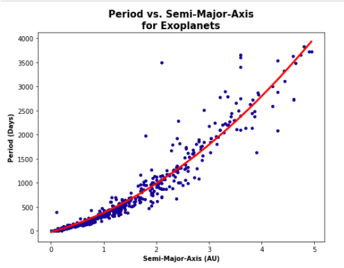
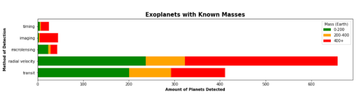

Most of us are familiar with our own solar system, and how we have a Sun which is a star and planets orbiting
that star, one of which is our Earth. We know that there are gas giant planets that have large masses and sizes,
and are made up mostly of gases such as Hydrogen and Helium, and that there are smaller rocky solid planets,
such as the Earth or Mars, that are also less massive. Many of us have made the observation that planets such as
Mercury that are closer to the Sun have shorter years, and are also hotter than the planets that orbit far away,
such as Neptune. Some of us might have even made the distinction between rocky planets found closer to the sun
than the gas giants, or that far away orbits tend to look more funky and elliptical as opposed to close ones.
All of these are ways that we see the universe, using the model of our own solar system. It has been this solar
system that has provided the basis for many theories about the way that planets behave for centuries. In 1995
however, a remarkable discovery was made that changed the course of astronomy. For the first time, a planet that
orbits a star that was not our Sun was detected. This was a Jupiter sized gas giant that orbited remarkably close
to its parent star: 51 Pegasi. From the star’s name, the planet’s name was deemed 51 Pegasi b.
So there are planets outside our solar system, and we know how to calculate the parameters of these planets
once detected, such as their masses, radii, or year length. To date, there have been more than 4000 exoplanets discovered,
and their number is growing by the day. Using a CSV dataset that contains 3500 of these planets, what can we
untangle from all of this data? 51 Pegasi b was an exoplanet discovery that raised many questions,
since it was a Jupiter- like planet orbiting in the distance of Mercury to its star! So is our solar system
really a good model for the rest of the universe?
One of the most interesting behaviours of the planets in our solar system was observed by Johannes Kepler
back in the 17th century. He observed that the orbital period, or in other words the length of time that
it takes for a planet to complete one orbit around the Sun squared is proportional to the semi-major
axis of the orbit cubed. Now, for the sake of this article, it is sufficient to think of the semi major
axis as the distance from the planet to its star, however, the semi-major axis is the length of the line
segment joining the center of an ellipse to its vertex. Since no orbit is perfectly circular and therefore
every orbit is eccentric to some degree and forms an elliptical orbit, the semi-major axis can also be
used to describe planetary orbits and the distance between a planet and its star. The general unit for the
semi-major axis is the astronomical unit (AU), which is simply the distance from the Sun to the Earth.
The relation became known as Kepler’s 3rd law of planetary motion, and is denoted in the following way:
Evidently, in the equation, P denotes the period and a the semi-major axis. Now using data on
the periods and semi-major axes of exoplanets, it is also possible to compare these two parameters and get
remarkable results (figure 1). We can see clearly the function that denotes this correlation present
with most exoplanets. Each exoplanet is denoted by a dot, forming a scatter plot.

Figure 1: Exoplanet Period vs. Semi-Major Axis
As seen, Kepler’s law is universal, and applies to all exoplanets that have been discovered. Notice
though that as the exoplanet’s semi-major axes increase, and they get more distant from their star,
the correlation becomes weaker than at close ranges. This could be caused by a greater eccentricity in
farther orbits, which means that orbits far away are more elliptical (figure 2). This is an observation
that was made in the introduction about our solar system, and as seen, applies universally. However,
it could simply just be related to the fact that it is more difficult to make observations or precise
periods and thereby calculations of semi-major axes at further planets, because of limitations in the
instruments used.
Figure 2: Exoplanet Semi-Major Axis vs. Eccentricity (the non-outstanding correlation is made
clear by the regression line)
Another observation that we know is true for our solar system is that as the semi-major axis increases,
or as planets get farther away from the Sun, they become colder. This makes perfect sense because the
farther away you are from the Sun, the less of its heat you would get. Most heat data for exoplanets are
estimations, and they are estimated from the distance that the planets are from their star. So yes,
it is evident that the data (figure 3) will show this. The habitable zone is labeled on the graph by a
green band. This zone is thought of loosely as the zone where liquid water is able to exist, or from 0-100°C
in general. It is called the habitable zone because most astrobiologists agree that liquid water is one of
the essential building blocks of life.
Figure 3: Exoplanet Temperature vs. Semi-Major Axis
As seen, the black dot on the graph represents the Earth. It can be seen that it does indeed sit in the
“habitable zone”, and in the lower range of that. It makes sense, because the average temperature of the
earth is about 10-15°C. Furthermore, it can be seen that when it comes to the distance from the star,
habitable planets range from directly close to their star (probably if their star is a cold red dwarf),
to about 2 Earth distances (if their star is larger and hotter than the Sun). So overall, the Earth is an
average distance for a habitable planet, and that is probably due to the fact that the Sun is average in
terms of mass and therefore heat (figure 4). Also, there are many other planets that sit in the
habitable zone in terms of temperature, and this opens up a lot of doors for the possibility of life
developing outside our solar system. Even directly next to Earth, there are at least 10-20 planets. Another
interesting finding is about the outliers of the data. HD-220074 b and HD-208527 b stand
out clearly from the trendline for being hotter than they should. It actually turns out that they are so
large in mass (11 and 9 Jupiter-masses respectively) that they are capable of generating some of their
own heat, and are on the limit of being classified as Brown Dwarfs, or relatively cold and small stars!
Figure 4: Distribution of suns with planets for mass
So due to the nature of our Sun being very typical and average, Earth sits right in the middle of the
distribution of planets that fall in the habitable zone. There are also a remarkably large number of
these planets, and we see some interesting outliers when exceptionally large masses come in.
All of that being said, there are more observations that can be explored. For example, is our solar system
a correct model with regards to the observation that planets farther away are less dense and therefore
form gas giants, and planets that are close from more rocky planets? This is a statement that is generally
accepted, and is also underlain by physics: that as it gets colder far away, lighter elements like gases
can also condense, and form planets that will therefore be more gaseous, less dense, and form giants. It
turns out that the statement is generally correct, but that there are many catches (figure 5). First of
all, how is it possible to distinguish a rocky planet from a gas giant or ice giant (like Neptune)? This
turns out to be very hard, and cannot be done perfectly. All that we can do is estimate, and density can
aid this estimation. If the planet has a density over 3, it is probably a rocky planet, since it is closer
to the density of Iron (7.9g/cm³) or most rocks (3g/cm³) than most gases like Hydrogen or Helium,
that have low densities of less than 1g/cm³. Still however, this is a very loose aid, and not perfect.
Due to this, the data is also very loose and does not follow a strong rule. General findings though can be
interpreted.
Figure 5: Breakdown of Temperature vs. Semi-Major Axis based on Density
Firstly, ferrous (mostly made of Iron) and rocky planets are generally seen as being concentrated closer
to their star, within 2AU as opposed to low density planets that are mostly gaseous, which aligns with our
expectations. The gaseous planets however can be found everywhere. Now this is one of the catches, that
gaseous planets should be found further out, where gases can condense in the cold conditions, and should
not venture above the condensation line on the graphs. Physically, gas giants cannot form in those hot
conditions of up to 2500°K! Opposite of this expectation, there are actually more gas giants of low density
close to their stars, within the range of 0-1AU. Now it is well possible that there is some bias in this
data, since gas giants with short periods (close to their star) are the easiest to detect. They stand out
and do not take as long to observe! However, this doesn’t answer the fact that they cannot form in those
conditions, where Hydrogen is a thin hot vapour, far from condensing.
There are many theories that have been proposed to explain this phenomenon. One of the most well known is
the theory of migrating planets, that is that some planets are unstable in their orbits and do not stay
where they formed. Some of these gas giants could have formed in the “correct” zone but migrated towards
their stars due to outside effects. This is plausible, since the Moon itself is moving away from the Earth
at a rate of roughly 3.8cms per year. Interestingly, the first exoplanet 51 Pegasi b already mentioned
was one of these “Hot Jupiters” as they were deemed, and that is where much of the thinking changed
in the way that we regarded our small solar system as opposed to the universe. This is an example of something
that has been found in exoplanets, but of which there is no example in our solar system.
Diving a little deeper into this new group of migrated “Hot Jupiters” sparks even clearer results
(figure 6). This sort of Radius vs. Period or Radius vs. Semi-Major Axis graph can
almost be thought of as a model of all solar systems combined. The further you move right, the farther you
get from the star on the left of each graph, something that is true for both semi-major axis and period
(figure 1), and the further up you go, the larger the planet becomes. If such a plot were applied to
our solar system, we would see a general upward trend due to some of the concepts already explored
(planets would get larger further away from the star). Plotting 3500 exoplanets however yields a more
clear picture of the universe, and yields some different findings.
Figure 6: Grouping plots for typical exoplanet types
The general weak positive correlation can be pointed out on both graphs, and our solar system also follows
a similar pattern. However, the group of Hot Jupiters can be distinguished very clearly, being a group
of larger and more massive outliers (as opposed to the more common low mass planets in the general correction)
that are about 0.75 - 1.75 Jupiter radii, and also are very close to their corresponding stars (within 0.1AU).
However, it is apparent that there is some bias in the data, and the group of Hot Jupiters in
reality is relatively not this large. It can be seen for example that there are not many measurements that
are made outside of 0.2AU, and our planet Earth is at 1AU, Jupiter being at 5AU! So evidently, the techniques
at our disposal to detect these planets are very limited and favour planets that are close to their stars,
are large, and have short periods, exactly the group of Hot Jupiters. However, 3500 exoplanets,
and the visible trend is still enough data to be able to declare this group of planets a new group,
something that wouldn’t have been imagined before the discovery of 51 Pegasi b.
There is something else that stands out in these scatter plots, and it makes perfect sense. For the planets
of which we do know the mass, we see more green (low mass) planets at the bottom of the graphs, and more
high mass red ones as we go up. In other words, the mass tends to increase with radius. Now the larger a
planet is, it is expected to have more mass, so this makes sense. Overall therefore, there are two takeaways
from these graphs that can be extended: Bias is ever present in the data, and mass and radius are related.
First, how are mass and radius related? Is it really just a simple upward trend, or is there more to it?
Well, it turns out that when compared with scatter plots (figure 7), radius, mass, and density show very
interesting correlations. It is worth knowing that density is calculated from mass and radius, using the
formula for density being m/V, where we know that the volume of a sphere can be calculated as
4/3πr³. Since all planets are spheres due to the equal force of gravity, these two formulas can be
combined to form the formula for the density of any planet:
It can be seen from the comparisons that radius and mass are not as perfectly correlated in a line as one
would expect. Up until planets of about 0.3 Jupiter masses, there is a pretty drastic increase of mass
with radius. However, by the time we reach 0.4 Jupiter masses and certainly 0.5, the curve flattens, and
planets still get more massive, but do not get larger. This is very important, because it means that the
planets get more dense, since if their mass is increasing but their size is stopping to increase, the
planets will have more and more mass in the same space causing them to have an increase in density. So we
have just made a general very important observation about how planets behave as they increase in mass.
They expand and increase in size as all of that mass accumulates on them, but as they reach about the size
of Neptune or Uranus, and certainly Jupiter, they halt with this expansion, and the gases that form them
(since by this stage we are dealing with Gas Giants) begin to collect and become more dense. This could
be caused by the fact that the gravitational force of these planets with mass become so strong that the
gases begin to be pulled towards the center of the planet, and compress, thereby halting expansion, and also
increasing density.
On the graph of density vs. mass, this is precisely what we can see. Up to about 0.5 Jupiter masses,
density decreases drastically, which is something that we would expect, since Earth is more dense than
Mars which is more dense than Saturn and so on. However, by 1 Jupiter mass planets have stopped expanding
but kept growing in mass, causing an increase in density. In fact, our own solar system shows this too,
since Jupiter is actually more dense than Saturn (densities of 1.33 and 0.69 g/cm³ respectively). So
there are a lot of important general observations that can be made of planets using exoplanet data.
Figure 7: Exploring the relations of mass, radius and density in planets
Finally, the final graph raises many questions. We see what is expected: density decreases as radius
increases, so the larger the planet, the lower the density will generally be. This again makes sense,
just as the 2nd visualization, since Earth is more dense than Mars, which is again more dense than Jupiter.
Again, just as expected, around ¾ Jupiter radii, we see a rebound in the density of the planets, as they
become very large. However, unlike in the previous graph, after 1 Jupiter radius, the density starts again
to decrease. One possible explanation could be what we see in the mass vs. radius plot, that at very
large masses, the radius actually starts to decrease again with the exceptional gravitational forces. So the
largest planets by radius are actually not the most massive, so this could be related to that finding.
The outliers also require investigation. Kepler-277b for example is the first planet that stands out.
It is way too small to be as massive as it is. It turns out in fact that it is the second most massive
and third largest rocky planet ever discovered. It is more massive than Neptune and is made mostly of rock!
The outlier of Kepler-413b is also worth mentioning. It has a mass not too short of Saturn, and a
density approaching that of Earth. It is noted in databases as a Gas Giant, however, these findings would
challenge that view. Unless it is an error in the dataset, there can be no gas giant with a density in
between that or rock and Iron.
The second point that was mentioned with the observation of the Hot Jupiter group was the possible bias
in the data dealt with. To understand limitations in data collection, we first need to understand the
methods used. For the 3500 exoplanets in this dataset, most of them were discovered with 2 methods:
transit and radial velocity (RV for short). The transit method looks at dimming in the light
of a star to detect an exoplanet orbiting the star and blocking out that light, and RV looks at shifted light
frequencies coming in from a star, resulting in a wobble towards and away from Earth due to the gravitational
tug of an exoplanet. There are then three other methods that were used for the discovery of some planets.
There are microlensing (detecting distortions in the fabric of space-time), imaging
(directly taking an image of an exoplanet by blocking out the light of its star), and finally timing
(used for specific types of exoplanets orbiting a pulsar, or neutron star). Using a bar graph, we can see
the amount of exoplanets that were discovered with the use of each method (figure 8).
Figure 8: Breakdown of exoplanets discovered per method
As can be seen, even though radial velocity was the method used for the discovery of most early
exoplanets, like 51 Pegasi b, the transit method has been overwhelmingly popular in recent years,
with over 2500 of the 3500 exoplanets in the dataset detected with the method. The Kepler space telescope
for example uses this method for exoplanet detection, and therefore all Kepler name exoplanets were
discovered with the use of this method. The rest are very small, only with a couple dozen exoplanet
discoveries made.
Now let's break this data down to look at the bias. First, we can graph the breakdown of the masses of
exoplanets that were discovered with each method (figure 9). As seen here, the majority of the planets
were discovered with the use of RV. This is due to the fact that from RV observations, the mass of an
exoplanet can be calculated, but not the radius, whereas for transit, it’s vice versa. So the exoplanets
under transit here must have been observed with radial velocity also in order to find the mass, after
being detected first by transit.

Figure 9: Breakdown of exoplanets detected per mass category with each method
It can be seen clearly that the RV method favours larger mass planets over smaller ones. In fact,
about half of the planets detected with the use of the RV method are over 400 Earth masses in size,
whereas Jupiter is 317 Earth masses. This makes sense, because the more massive an orbiting planet, the
more gravitational tug it will have on its parent star, causing more of a wobble and a greater chance of
detection by the RV method. In this case, transit is actually better, where the majority of planets
discovered with the method were verified as 0-200 Earth masses, so less massive. In this way, transit
has less of a bias (figure 10). It is also interesting to note that imaging can almost exclusively
detect very massive planets, since they need to be very large to be directly photographed! In the case
of microlensing however, we see that it is remarkably successful at detecting even low mass exoplanets.
Figure 10: Breakdown of exoplanets detected per radius category with each method
In the case of radius categories, we see only the transit method present. Again, this is because only
the transit method has the capability to measure the radius of the planet (inferred from the amount the
light of a star dips, caused by the larger surface area of a planet). All other methods work with mass,
and therefore are not present on the graph, except for imaging that can infer size from the real life
image taken for some very large exoplanets with 4+ Earth radii. Also again, it is noticeable that the
transit method is successful in detecting a lot of small planets (0-2 Earth radii), as well as large planets.
This, also seen in the mass visual, implies that the transit method is more successful at detecting a
wider range of planets as opposed to RV. This also explains why there could have been some bias with the
Hot Jupiter group that was detected excessively with the use of RV detection, and also why the planets
in the general expected trend had mostly unknown masses, since they were mostly detected with the use of the
transit method.
So perhaps the Hot Jupiter scatters were not the most reliable. That being said, they still had a lot
of truth in them, but maybe there are more reliable ways to look for the kinds of exoplanets that are the most
common. In a histogram of the most common exoplanet masses and densities (figure 11), we actually see
that relatively low mass exoplanets between 0-20 Earth masses are the most common types in the universe,
showing that gas giants like Jupiter are actually pretty rare. Contrasting this however, we can also see
that planets with a low density of generally less than 2g/cm³ are the most common, with only a little
bump for rocky planets near Earth density. This is very strange, since it suggests that rocky planets are just
as rare as gas giants, and that either super-Earth size watery worlds (the density of water is
1g/cm³), or mini-Neptune sized gas or ice planets are the most common. Super Earth
means Earth-like but larger, and mini-Neptune means Neptune-like but smaller.
Figure 11: Amount of exoplanet per mass and density category
So in conclusion, data science can reveal a whole lot of information about planets and their characteristics,
and can open up completely new doors towards getting to know more about our universe. As we saw, many of
the characteristics that can be seen in our solar system are also true in most others, underpinned by
physical laws. In other times, our solar system does not reflect the norm and does not show us the most
common types of planets, such as with Hot Jupiters, Super Earths, and Mini Neptunes,
groups of exoplanets that are not present in our solar system. Exoplanets can also visually show physical
laws that have been around for centuries, and tell us correlations from which we can decode whole new ideas
and behaviours for what a planet really is, and how it forms. The methods we use to detect these wonders
are still not perfect, but we can see the bias and the direction which is necessary to mitigate this bias.
As we head into the future, this part of science will become crucial in our humanity’s quest for habitable
worlds, and for life as we know it.